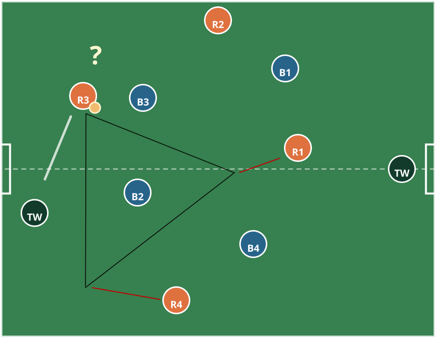
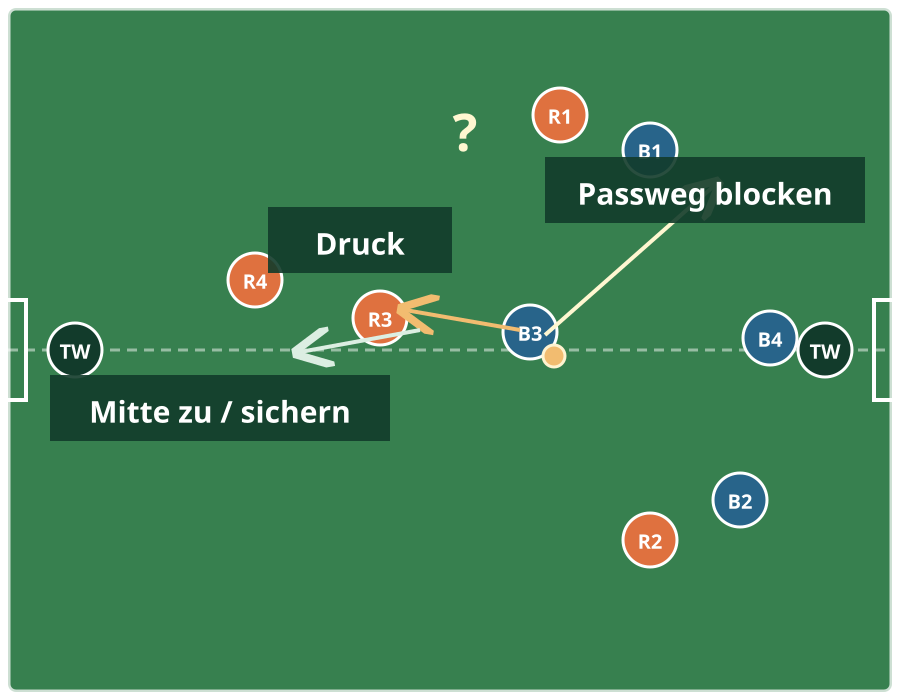
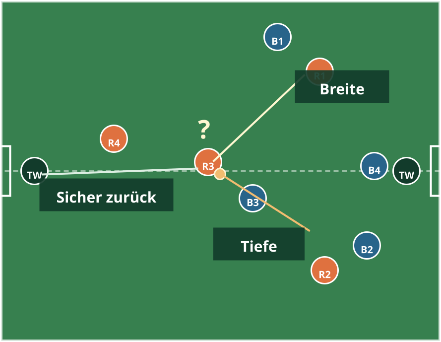
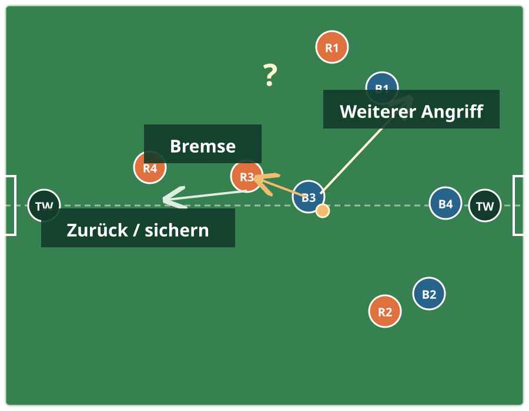

Der Trainingsweg zum Manifest: Situationen erleben, verstehen, ausprobieren und im Spiel wiedererkennen.
Was dieser Plan leistet
Das Manifest beschreibt unsere Spielidee. Dieser Leitfaden übersetzt sie in Training: mit einer wiederkehrenden Lernschleife, konkreten Trainerfragen und Spielformen, die zur Mannschaft passen.
Ein ThemaEine Hauptentscheidung pro Einheit.
Viel SpielzeitKleine Teams, viele Ballkontakte, kurze Wartezeiten.
Fragen vor AnsagenErkennen lassen, kurz helfen, sofort wieder spielen.
Fehler sind DatenDie nächste Aktion ist wichtiger als die letzte.
01
Coaching-Haltung
Die Spielerinnen sollen Entscheidungen nicht auswendig lernen, sondern im Spiel erkennen und mutig ausprobieren.
Warum und wie, nicht nur was
Wir geben den Spielerinnen einen verständlichen Sinn für eine Handlung. Eine Frage eröffnet den Gedanken, eine kurze Demonstration macht die Lösung sichtbar und die Spielform liefert den passenden Kontext. So bleibt das Training aktiv, statt aus langen Erklärungen zu bestehen.
Sprache: wenige, wiederkehrende Begriffe aus dem Manifest: „Kopf hoch“, „Ball sichern“, „bremsen“, „Mitte zu“.
Feedback: mutige, passende Versuche sichtbar loben, nicht nur Tore oder Fehler kommentieren.
Fragen: kurz, konkret und nach einer beobachtbaren Situation stellen.
Unterbrechen: nur wenn eine kurze Klärung allen hilft; danach sofort wieder spielen lassen.
02
Die Lernschleife
Jedes Thema folgt demselben Ablauf. Das gibt den Spielerinnen Orientierung und hilft dem Trainer, nicht zu viel auf einmal zu coachen.
1
Spielproblem erlebenEine kleine Spielform erzeugt die Situation, die gelernt werden soll.
2
Wahrnehmen und fragenKurzer Stopp: „Was war gerade schwer? Was hast du gesehen?“
3
Lösung sichtbar machenEine Spielerin oder der Trainer zeigt eine mögliche Lösung in höchstens zwei Minuten.
4
Unter leichtem Druck übenEine kurze analytische Aufgabe bereitet die Bewegung oder Entscheidung vor.
5
Im Spiel anwendenZurück in 2v2, 3v3 oder 4+1 gegen 4+1. Nur ein Fokus bleibt sichtbar.
6
ReflektierenEine Schlussfrage: „Was hat dir heute geholfen, die Lösung zu finden?“
Richtwert für 85 Minuten: 10 Minuten Ankommen mit Ball, 10 Minuten Spielproblem, 3 Minuten Frage und Demo, 10 Minuten Kurzvorbereitung, 25 Minuten Anwendung, 20 Minuten freies Abschlussspiel und 5 Minuten Reflexion. Die freiwilligen 15 Minuten davor bleiben freie Ballzeit.
03
Die vier Spielmomente lernen
Alle Spielerinnen lernen alle Momente. Die Raute hilft bei der Orientierung, ersetzt aber keine gemeinsame Verantwortung.
Wir haben den Ball
Ballkontrolle, Anspielbarkeit und mutige Entscheidungen. Die Torhüterin ist die sichere Rückpassoption.
„Kopf hoch. Ball sichern. Dann mutig entscheiden.“
Startfragen
„Welche drei Dinge kannst du mit dem Ball tun?“
„Wer hilft dir, wenn vorne nichts frei ist?“
Wir verlieren den Ball
Die erste Reaktion bremst den Gegenangriff; danach findet die Mannschaft zurück in ihre Absicherung.
„Erst bremsen, dann zurück.“
Startfragen
„Wer ist dem Ball am nächsten?“
„Wo dürfen die Gegnerinnen nicht durchkommen?“
Der Gegner hat den Ball
Wir schützen Mitte und Tor, stellen kontrolliert und sichern hinter der ersten Spielerin ab.
„Mitte zu. Eine stört, eine sichert.“
Startfragen
„Wo ist der Weg zum Tor am gefährlichsten?“
„Wer hilft, wenn eine zum Ball geht?“
Wir gewinnen den Ball
Der wichtigste Startpunkt für diese Mannschaft: Nach der Eroberung nicht wegschlagen, sondern wahrnehmen und entscheiden.
„Gewonnen? Kopf hoch. Vorwärts, oder sicher neu.“
Startfragen
„Musst du immer sofort nach vorne schießen?“
„Wann hilft ein sicherer Pass nach hinten?“
04
Wir haben den Ball
Ballbesitz ist kein Warten auf den Befreiungsschlag. Die Mannschaft schafft Zeit und Optionen für die ballführende Spielerin.
Lernziel
Die Ballführende sichert den Ball und erkennt mindestens eine freie Lösung. Die Mitspielerinnen geben Breite, Tiefe oder eine sichere Rückpassoption.

Ballbesitz ist eine Entscheidung über Zeit und Optionen: Die Ballführende erkennt Breite, Tiefe oder eine sichere Rückgabe.
Trainerfrage für den ersten Stopp: „Wer kann ihr helfen, wenn sie am Ball ist?“ Gemeinsame Regel: „Kopf hoch. Ball sichern. Dann mutig entscheiden.“
1. Spielproblem: 2v2 auf vier Minitore
Breite wird nicht erklärt, sondern durch die vier Tore sichtbar und nützlich.
8–10 Min2v2ca. 20 × 16 m4 Minitore
Organisation
Jedes Team greift auf zwei Minitore an. Ein Tor zählt nur, wenn die Ballführende vorher eine Mitspielerin als Option hatte oder selbst in freien Raum dribbelt.
Stoppfrage
„Wo war Platz, als ihr beide nebeneinander standet? Wo war Platz, als ihr euch getrennt habt?“
2. Kurzvorbereitung: Pass, erster Kontakt, neue Position
Die Spielerinnen erleben den Pass nicht als Endpunkt, sondern als Start einer neuen Anspielstation.
8–10 Min3er-Gruppenca. 12 × 10 m
Ablauf
Drei Spielerinnen bilden ein Dreieck. Nach dem Pass löst sich die Passgeberin in einen neuen freien Winkel. Die annehmende Spielerin nimmt möglichst in die freie Richtung mit.
Coach
„Pass und zeig dich wieder.“ Nur dann anhalten, wenn die Dreiecksform komplett verloren geht.
3. Anwenden: 3v3 plus Torhüterin
Die Torhüterin wird als sichere Rückpassstation erlebt, nicht als letzte Notlösung.
12–15 Min3v3 + TWca. 25 × 20 m2 Tore
Organisation
3v3 auf zwei Tore. Das aufbauende Team darf die eigene Torhüterin immer anspielen. Nach einem Rückpass muss sich mindestens eine Feldspielerin neu anbieten.
Coach
„Zurück ist gut, wenn danach wieder eine neue Richtung frei wird.“
4. Transfer: 4+1 gegen 4+1
Die Raute ist nur Orientierung: Entscheidend sind Breite, Tiefe und eine freie Rückpassoption.
15–20 Min4+1 gegen 4+1ca. 40 × 25 m2 Jugendtore
Aufgabe
Normal spielen. Der Trainer beobachtet, ob die Ballführende nach dem ersten Kontakt eine sichtbare Option hat.
Reflexion
„Wann hat euch ein Rückpass geholfen? Wann habt ihr das Feld groß gemacht?“
05
Der Gegner hat den Ball
Verteidigen bedeutet zuerst Tor und Mitte schützen. Druck, Abstand und Absicherung werden dabei gemeinsam gelernt.
Lernziel
Die Spielerinnen stehen zwischen Gegnerin und eigenem Tor. Eine setzt kontrolliert Druck, mindestens eine sichert dahinter oder zentral ab, und die Torhüterin bleibt mit dem Spiel verbunden.

Gegnerball lebt von sauberer Reihenfolge: Druck auf den Ball, Absicherung hinter der ersten Verteidigerin und Schutz der Mitte.
Trainerfrage für den ersten Stopp: „Wohin soll die Gegnerin nicht kommen? Wer hilft, wenn eine zum Ball geht?“ Gemeinsame Regel: „Mitte zu. Eine stört, eine sichert.“
1. Spielproblem: 1v1 auf zwei Wege
Die Verteidigerin spürt den Unterschied zwischen Mitte offenlassen und nach außen lenken.
8–10 Min1v1ca. 12 × 10 m2 Endzonen
Organisation
Die Angreiferin startet zentral und will durch eine von zwei Endzonen dribbeln. Die Mitte wird als gefährlicher Weg markiert; die Verteidigerin bekommt einen Punkt, wenn sie kontrolliert nach außen lenkt oder den Ball gewinnt.
Coach
„Zwischen Ball und Tor. Seitlich bleiben. Mitte zu.“
2. Kurzvorbereitung: Abstand und Körperstellung
Die Spielerinnen testen selbst, wann sie zu nah oder zu weit weg stehen.
6–8 Min1v1ca. 8 × 8 m
Ablauf
Die Angreiferin dribbelt langsam an. Die Verteidigerin probiert nacheinander zu nah, zu weit und mit ungefähr einer Armlänge Abstand. Danach benennt sie, bei welcher Position sie reagieren konnte.
Coach
„Seitlich, gebeugt, eine Armlänge.“ Kurz vormachen, dann sofort wieder spielen.
3. Anwenden: 2v2 auf ein Tor
Druck und Absicherung werden als Paaraufgabe sichtbar.
12–15 Min2v2ca. 18 × 14 m1 Tor + Konterlinie
Organisation
Zwei Angreiferinnen greifen auf ein Tor mit Torhüterin an. Nach Ballgewinn kontern die Verteidigerinnen über eine Linie. So wird Verteidigen mit einem kontrollierten nächsten Ballbesitz verbunden.
Coach
„Eine stört. Eine räumt auf. Beide schützen die Mitte.“
4. Transfer: 4+1 gegen 4+1
Die Raute verschiebt zur Ballseite, ohne dass alle Spielerinnen auf die Ballführende zulaufen.
15–20 Min4+1 gegen 4+1ca. 40 × 25 m2 Jugendtore
Aufgabe
Normal spielen. Der Trainer beobachtet nur: Ist die Mitte geschützt? Gibt es Druck und eine Sicherung?
Reflexion
„Wann war unsere Mitte zu? Wann hat eine Mitspielerin dir geholfen?“
06
Ballgewinn
Der erste Moment nach der Eroberung ist entscheidend: Kopf hoch, Tempo halten, dann die beste Richtung wählen.
Lernziel
Nach Ballgewinn erkennt die Spielerin zuerst eine Vorwärtsoption. Ist sie nicht frei, nimmt sie den Ball mit, passt zu einer Mitspielerin oder nutzt die Torhüterin, statt ihn blind wegzuschießen.

Ballgewinn ist ein Entscheidungsmoment: zuerst schauen, dann nach vorne spielen, selbst gehen oder sicher neu aufbauen.
Rotes Team: Ball gewonnenBlaues TeamTorhüterinnen? = erst schauen und entscheidenWeiße Klammern: ToreDrei Pfeile: mögliche nächste Aktionen
Trainerfrage für den ersten Stopp: „Wir haben den Ball gerade gewonnen. Was kannst du jetzt sehen, bevor du ihn spielst?“ Gemeinsame Regel: „Gewonnen? Kopf hoch. Vorwärts, oder sicher neu.“
1. Spielproblem: 2v2 Richtungswechsel
Die Spielerinnen erleben unmittelbar, dass Ballgewinn eine neue Entscheidung auslöst.
8–10 Min2v2ca. 18 × 14 m4 Minitore
Organisation
Zwei Teams spielen 2v2 auf vier Minitore. Nach Ballgewinn wird sofort auf die Tore der neuen Angriffsrichtung gespielt.
Beobachtung
Wie viele Bälle werden direkt wieder verloren oder weggeschossen? Wer schaut vor der ersten Aktion?
Stoppfrage
„Was hätte dir nach dem Ballgewinn eine Sekunde mehr Zeit gegeben?“
2. Kurzvorbereitung: Erobern und mitnehmen
Eine kurze, einfache Aufgabe für den ersten Kontakt aus dem Druck. Sie ersetzt das Spiel nicht, sie bereitet es vor.
8–10 Min2er- oder 3er-Gruppenca. 10 × 8 m
Ablauf
Eine Spielerin passt einen freien Ball in die Mitte. Die andere erobert ihn, macht den ersten Kontakt in eine freie Richtung und dribbelt über eine offene Seite. Danach Rollenwechsel.
Coach
„Schau, bevor du den Ball hast.“ Danach nur einen Punkt: erster Kontakt weg vom Druck.
Variation
Eine passive Gegnerin wird schrittweise aktiv. Erst wenn die Kontrolle gelingt, kommt Zeitdruck hinzu.
3. Anwenden: 3v3 plus Torhüterin
Der Rückpass wird als kluge Option sichtbar, nicht als Angstpass.
12–15 Min3v3 + TWca. 25 × 20 m2 Tore
Organisation
3v3 auf zwei Tore. Eine Torhüterin gehört zum aufbauenden Team und darf als Rückpassoption genutzt werden. Nach Ballgewinn sucht das Team erst den Blick nach vorne.
Spielregel
Kein erzwungener Rückpass. Zusatzlob oder Zusatzpunkt nur, wenn der Rückpass anschließend eine neue freie Richtung eröffnet.
Coach
„Vorne frei? Dann mutig. Nicht frei? Sicher neu.“
4. Transfer: 4+1 gegen 4+1
Die Mannschaft spielt in ihrer Raute. Der Trainer beobachtet nur den Moment nach Ballgewinn.
15–20 Min4+1 gegen 4+1ca. 40 × 25 m2 Jugendtore
Aufgabe
Normal spielen. Der Trainer zählt nicht Tore, sondern kontrollierte erste Aktionen nach Ballgewinn.
Intervention
Bei Bedarf einmal einfrieren: „Welche Richtung ist gerade frei? Wer kann helfen?“ Danach sofort weiterspielen.
Reflexion
„Wann war der Pass zurück heute schlau? Wann war der Weg nach vorne frei?“
07
Wir verlieren den Ball
Nach dem Verlust geht es nicht sofort um Erobern. Die erste Aufgabe ist, den Gegenangriff zu bremsen und die Mitte zu schützen.
Lernziel
Die nächste Spielerin reagiert sofort und verlangsamt die Ballführende. Die anderen Spielerinnen laufen zurück, schließen die Mitte und finden wieder in die Absicherung.

Ballverlust ist keine chaotische Reaktion: zuerst bremsen, dann zurück und die Mitte schützen.
Trainerfrage für den ersten Stopp: „Wer ist jetzt am nächsten am Ball? Was können die anderen schon tun?“ Gemeinsame Regel: „Erst bremsen, dann zurück.“
1. Spielproblem: 2v2 mit sofortigem Richtungswechsel
Der Ballverlust wird sichtbar zum Auslöser einer neuen Aufgabe.
8–10 Min2v2ca. 18 × 14 m2 Tore
Organisation
Nach jedem Ballgewinn greift das neue Team sofort in die Gegenrichtung an. Die ehemalige Ballbesitzerin soll zunächst den direkten Weg zum Tor erschweren.
Stoppfrage
„Was hat die Gegnerin nach Ballgewinn am meisten gebremst?“
2. Kurzvorbereitung: Stellen und sichern
Die Rollen der ersten und zweiten Verteidigerin werden körperlich spürbar, bevor sie im Spiel auftauchen.
8–10 Min2v1ca. 14 × 10 m
Ablauf
Eine Angreiferin dribbelt Richtung Torlinie. Die nächste Verteidigerin stellt seitlich und schützt die Mitte; die zweite Verteidigerin bleibt leicht dahinter und zentral.
Coach
„Eine bremst. Eine hilft.“ Nicht auf eine Balleroberung bestehen.
3. Anwenden: 3v3 Umschaltzone
Die Zone ist nur eine Lernhilfe: Sie lenkt den Blick auf die erste Reaktion nach Ballverlust.
12–15 Min3v3ca. 24 × 18 m2 Tore
Organisation
In der zentralen Zone zählt ein Ballgewinn für die verteidigende Mannschaft besonders, wenn die nächste Spielerin den Angriff sichtbar verzögert und die anderen die Mitte schließen.
Variation
Wenn die Reaktion verstanden ist, die Zone wieder entfernen und normal spielen.
4. Transfer: 4+1 gegen 4+1
Im vollen Spiel zählen klare erste Aktionen mehr als hektisches Hinterherrennen.
15–20 Min4+1 gegen 4+1ca. 40 × 25 m2 Jugendtore
Aufgabe
Normal spielen. Der Trainer notiert nur drei Situationen: Wer bremste? Wer schloss die Mitte? Wer half dahinter?
Reflexion
„Was hat uns nach Ballverlust wieder Ordnung gegeben?“